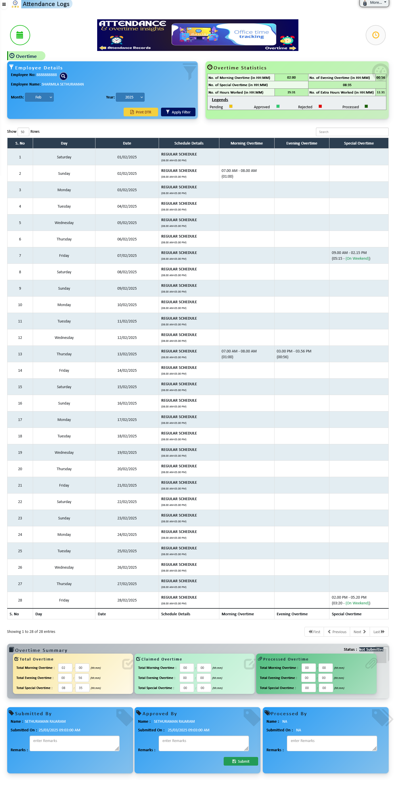

Transform the way you manage employees, payroll, attendance, leave, training and organizational structure with a secure, modern HR platform.
A powerful and flexible HR platform built to streamline operations, enhance productivity, and drive organizational growth.
Automate HR processes to save time and increase operational efficiency. Manage employees, leave, payroll, attendance, training, and overtime seamlessly within one secure and modern HR ecosystem.

A complete HR ecosystem designed to automate processes, empower teams, and deliver data-driven workforce management.
A centralized and intuitive HR system that consolidates all essential HR tasks into one platform, simplifying workflows and improving operational efficiency.
Securely manage employee records including personal data, roles, compensation, qualifications, and performance history from a centralized database.
Streamline HR processes with automated reminders, approvals, and task notifications to reduce manual work and ensure timely execution.
Empower employees and managers with portals to manage leave requests, payslips, performance tracking, and approvals seamlessly.
Automate leave tracking with real-time balance updates, accrual calculations, and policy compliance for all leave types.
Capture real-time attendance data through biometric or time logging systems for accurate overtime and payroll processing.
Manage employee training requests, approvals, and development tracking aligned with organizational growth goals.
Generate actionable HR reports and KPI analytics to support strategic decision-making and workforce planning.
A fully integrated suite of smart HR modules designed to streamline employee lifecycle management, optimize workforce operations, and deliver real-time organizational insights — all within a single unified platform.
The system stores and retrieves all current employee-related data on a centralized database, enabling easy access and decision-making for workforce and organizational purposes.
Manage all employee information in five tabs:
Employees can submit updates via a change request process. HR approval is required before changes reflect in the master database.
Supervisors can view only their subordinates’ details. HR configures role-specific visibility for proper access control.
HR manages login access for active employees and restricts inactive users automatically.


Design and manage your complete organizational structure with automated reporting logic, position hierarchy control, and real-time workforce visibility across departments, divisions, and locations.
HR can create and manage the complete department and location hierarchy structure, defining divisions, reporting layers, and structured position allocations within each unit.
Visual representation of the organization structure displaying locations, reporting connections, and position distribution across the enterprise.
View and manage all active positions within their respective organizational hierarchy structure, ensuring proper reporting alignment and structural accuracy.
Lists all positions currently assigned to active employees. Only positions with active employees are considered occupied, allowing HR to monitor workforce allocation in real-time.
Automatically identifies positions without active employee assignments and marks them as vacant. HR can create vacancies and publish them to initiate the recruitment process for hiring suitable employees.


Streamline leave configuration, entitlement tracking, approval workflows, and automated balance management with a fully integrated leave processing system designed for accuracy, compliance, and transparency.
Create and manage customizable leave categories aligned with organizational policies. HR can define leave structures, configure accrual-based types, and maintain regulatory compliance with a streamlined configuration process.
Maintain accurate leave entitlements by tracking balance allocations and enforcing usage limits. HR and authorized roles can adjust balances while ensuring full transparency through automated activity logs.
Employees can apply for eligible leave types through a structured approval hierarchy. Requests flow through reporting managers and HR processing, ensuring proper validation, balance deduction, and absenteeism control.


Automate attendance tracking, overtime management, schedule configuration, and payroll integration with a centralized system designed to improve accuracy, transparency, and workforce productivity.
Track employee clock-ins, clock-outs, breaks, late hours, and overtime automatically. The system calculates irregularities based on assigned schedules and provides detailed daily attendance insights.
HR Info allows employees and HR to record valid working time adjustments via Notes. Notes can be submitted for offline work, on-site work, or when unable to clock in/out. HR can configure multiple note types and assign privileges accordingly.
System allows multiple classified notes for attendance. Personal notes are limited to accumulated working hours, while Official notes have no restrictions. HR can assign note types to specific employees ensuring compliance and flexibility.
HR can configure various schedule types, including full-time, part-time, and shift-based arrangements. Schedules can be assigned to employees ensuring operational efficiency and workforce flexibility.
HR can configure recognized holidays in the system, allowing employees to log non-working days. This ensures compliance, accurate attendance recording, and improved payroll and workforce management.


Automate overtime tracking, claims submission, and department-specific settings with a centralized system designed to ensure accuracy, transparency, and fairness in managing extra work hours.
Automatically calculate and display monthly overtime hours for each employee. Employees can review accumulated overtime, submit claims, and HR can process approvals efficiently, ensuring accurate compensation and transparency.
Configure organization-wide and department-specific overtime rules. Ensure compliance, flexibility, and fair management of extra work hours for all employees.
HR can overview all processed overtime applications, including total hours and financial implications, providing clear insights for reporting and payroll purposes.
The overtime workflow ensures proper submission, approval, and processing with rejection options at all stages. Email notifications keep employees, supervisors, and HR informed. Submissions are locked after processing until deleted.



Streamline training requests and approvals, track skill development, and gain organizational insights into employee capabilities to foster continuous learning.
Employees can submit formal training requests aligned with their career goals or job requirements. Requests follow a structured approval process ensuring management review and alignment with organizational objectives.
All approved training requests are tracked within the system, providing management with insights into employee skill sets, completed trainings, and areas requiring further development.
Analyze employee skill levels and identify gaps to make informed decisions about role assignments, development opportunities, and succession planning. Supports organizational growth and continuous learning.


Manage the entire recruitment lifecycle from vacancy creation to onboarding. Track candidates, conduct interviews, send job offers, and seamlessly transition selected candidates into employees — all within one integrated system.
Create, configure, and control job openings with structured approval workflows and real-time status tracking.
Centralized candidate database to manage resumes, documents, and applicant information efficiently.
Monitor candidate progression through clearly defined recruitment stages within each vacancy.
Manage interview rounds with automated scheduling, interviewer assignment, and structured evaluation forms.
Consolidate interviewer feedback to support transparent and data-driven hiring decisions.
Generate, send, and track job offers with full negotiation and acceptance workflow management.
Seamlessly transition hired candidates into employees with automated onboarding workflows.


Extensive configuration options allow organizations to tailor system behavior, define roles, manage menus, set salary structures, and ensure data consistency across all HR processes.
Define and manage user roles with specific permissions, ensuring employees access only the necessary information and tools relevant to their job functions.
Customize navigation menus for departments or roles, providing employees with a streamlined interface that reflects relevant tools and information.
Create and manage complex salary frameworks including pay scales, bonuses, and allowances to ensure fair and competitive compensation across the organization.
Control visibility of profile sections like About, Position, Salary, Document, and Others for different roles, ensuring privacy and security.
Customize automated email communications for leave requests, payroll, performance reviews, and announcements, ensuring consistency and professionalism.
Standardize dropdown fields across the platform, maintaining data consistency and ensuring users can select accurate and relevant values.
Maintain a complete record of user actions within the system for enhanced security and compliance. Track modifications and identify unauthorized changes.
Record and display user login details and system activity to enhance security, transparency, and auditing capabilities across the platform.
Visual representation of organizational structure with occupied employee details and position information, helping HR quickly assess workforce distribution.
Create and publish announcements for employees upon login, ensuring that critical information and alerts are communicated efficiently.
Control employee email accounts, login access, and role assignments to maintain system security and ensure proper authorization.
Configure payslip generator with company info, logos, currency, and tax details to ensure accurate and standardized payroll documentation.


Quickly access standard HR reports and generate custom reports tailored to organizational needs, ensuring data-driven insights and informed decision-making.
Access a range of pre-defined HR reports including attendance, payroll summaries, leave balances, and performance evaluations. These reports provide immediate insights without extensive setup.
Create reports tailored to your organizational needs. Select relevant fields, apply filters, and configure layouts to meet exact specifications, enabling data analysis for specialized requirements.
Control access to reports based on user roles, ensuring sensitive HR data is only accessible to authorized personnel. Define role-based visibility and maintain data security and compliance with privacy regulations.


Automate payroll processing with accurate payslip generation, reflecting all salary components, deductions, taxes, and allowances. Download payslips individually or in bulk, ensuring timely payroll distribution.
HR can generate payslips automatically for all employees, incorporating base salary, allowances, overtime, deductions, and tax contributions. The process reduces manual errors and ensures compliance with company policies.
Once generated, payslips are available for immediate download individually or in bulk, facilitating fast and accurate payroll distribution to employees.


Simple pricing. Per User / Per Month. Scale anytime.
Based on selected modules & users
Need custom integrations, unlimited users, priority SLA support, or on-premise deployment? Contact our team for a tailored enterprise solution.
Contact SupportWe help businesses grow with powerful digital tools, modern websites, and smart marketing strategies.
Easily create, manage, and update your website content without coding. Our CMS solutions give you full control with an intuitive interface.
Manage text, images, videos, forms, and more — all from a powerful dashboard designed for simplicity and performance.
Modern, responsive, and SEO-optimized websites tailored to your business goals.
We build visually stunning and conversion-focused websites that engage users and deliver measurable results.
Increase visibility, grow engagement, and drive more traffic through strategic SEO and social media marketing.
From ranking higher on Google to engaging audiences on social platforms, we help your brand stand out in the digital space.
We take pride in delivering high-quality HR solutions to our esteemed clients.
Clients Served
Projects Completed
Countries Served
We value your interest in our HR Info Software and are here to provide you with the information and support you need. Whether you have questions about our services, want a demo, or need technical assistance, we’re always ready to assist.
See how HR Info can simplify your HR operations with a personalized walkthrough.
Scan this QR code to start chatting with us instantly.
Scan to download our mobile app or company brochure.
Available during business hours for real-time assistance.
Visit us at Al-Hoora, Kingdom of Bahrain
If you’re interested in collaborating with HR Info, contact us for partnership opportunities.